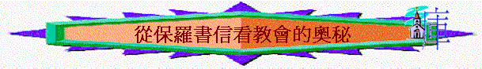

|
教會的權柄 |
教會的建立 |
教會的奧秘 |
教會的守望 |
「教會與以色列人是否沒有關係？」
「為何我們叫弟兄姊妹為肢體？」
「神在教會中的心意是甚麼？」
1.奧秘的意義
Ａ.奧秘的意思
「我們講的，乃是從前所隱藏、神奧秘的智慧，就是神在萬世以前預定使我們得榮耀的。」林前2:7
「這奧秘在以前的世代沒有叫人知道，像如今藉著聖靈啟示他的聖使徒和先知一樣。」弗3:5
a.沒神的啟示沒人知道的
b.在新約書信前是隱藏的
B.隱藏的原因
a.人的智慧有限
「除了在人裡頭的靈，誰知道人的事；像這樣，除了神的靈，也沒有人知道神的事。」林前2:11
b.先讓律法來臨
「但這因信得救的理還未來以先，我們被看守在律法之下，直圈到那將來的真道顯明出來。這樣，律法是我們訓蒙的師傅，引我們到基督那裡，使我們因信稱義。但這因信得救的理既然來到，我們從此就不在師傅的手下了。」加3:23-25
〜新約題及的奧秘，多關於因信稱義及救恩的事情，但要成就救恩，必須先讓律法來臨，律法的作用是令人知罪，知自己不能靠己力守律法，成就律法的義，所以才要靠信基督得救恩，所以在律法仍有功用的時刻，關乎救恩的奧秘就隱藏了。
c.等待基督的來臨
「要叫他們的心得安慰，因愛心互相聯絡，以致豐豐足足在悟性中有充足的信心，使他們真知神的奧秘，就是基督。」西2:2
〜奧秘的中心是基督，要揭明奧秘的內容，必須讓基督來臨，成就十架救恩，人才能得知。
d.等待聖靈的啟示
「只有神藉著聖靈向我們顯明了，因為聖靈參透萬事，就是神深奧的事也參透了。除了在人裡頭的靈，誰知道人的事；像這樣，除了神的靈，也沒有人知道神的事。我們所領受的，並不是世上的靈，乃是從神來的靈，叫我們能知道神開恩賜給我們的事。並且我們講說這些事，不是用人智慧所指教的言語，乃是用聖靈所指教的言語，將屬靈的話解釋屬靈的事。（或作：將屬靈的事講與屬靈的人）」林前2:10-13
「這奧秘在以前的世代沒有叫人知道，像如今藉著聖靈啟示他的聖使徒和先知一樣。」弗3:5
〜用人的智慧難明白屬靈的事，但當聖靈降臨在門徒身上，他們有神的靈，得聖靈啟示，用聖靈所賜的智慧可明白奧秘的事情了。
2.奧秘的內容(關乎教會)
〜在保羅書信中題及很多關於奧秘的事，大部份與教會及外邦信徒有關
A.外邦人得恩奧秘
「這奧秘就是外邦人在基督耶穌裡，藉著福音，得以同為後嗣，同為一體，同蒙應許。」弗3:6
「我本來比眾聖徒中最小的還小，然而他還賜我這恩典，叫我把基督那測不透的豐富傳給外邦人，又使眾人都明白，這歷代以來隱藏在創造萬物之神裡的奧秘是如何安排的，為要藉著教會使天上執政的、掌權的，現在得知神百般的智慧。」弗3:8-10
a.外邦人可以在基督��
「那時，你們與基督沒關……」弗2:12
「這奧秘就是外邦人在基督耶穌裡，藉著福音，得以同為後嗣，同為一體，同蒙應許。」弗3:6
〜我們(教會)原本與基督無關，但今日我們可以在基督�堙A是舊約的人難以理解的！
b.外邦人可以同為後嗣
「在以色列國民以外……」弗2:12
「得以同為後嗣……」弗3:6
「這樣，你們不再作外人和客旅，是與聖徒同國，是神家裡的人了；」弗2:19
〜我們原本不是以色列人，不是國民，沒有承繼以色列的權柄，但因著主，我們可以成為亞伯拉罕的後裔，與聖徒同國，成為神家�堛漱H，是極大的奧秘！
c.外邦人可以成為一體
「同為一體……」弗3:6
「你們從前遠離神的人，如今卻在基督耶穌裡，靠著他的血，已經得親近了。因他使我們和睦（原文作因他是我們的和睦），將兩下合而為一，拆毀了中間隔斷的牆；而且以自己的身體廢掉冤仇，就是那記在律法上的規條，為要將兩下藉著自己造成一個新人，如此便成就了和睦。既在十字架上滅了冤仇，便藉這十字架使兩下歸為一體，與神和好了，」弗2:13-16
「各（或作：全）房靠他聯絡得合式，漸漸成為主的聖殿。」弗2:21
〜我們原本與神分離，但因十字架的能力，使我們與神相和，更使我們與主、與神，與聖徒同為一體，彼此合一，沒有罪的隔絕了！
d.外邦人可以同蒙應許
「同蒙應許……」弗3:6
「那時，你們與基督無關，在以色列國民以外，在所應許的諸約上是局外人，並且活在世上沒有指望，沒有神。」弗2:12
「你們既屬乎基督，就是亞伯拉罕的後裔，是照著應許承受產業的了。」加3:29
「他因著信，就在所應許之地作客，好像在異地居住帳棚，與那同蒙一個應許的以撒、雅各一樣。因為他等候那座有根基的城，就是神所經營所建造的。」來11:9-10
「他們卻羨慕一個更美的家鄉，就是在天上的。所以神被稱為他們的神，並不以為恥，因為他已經給他們預備了一座城。」來11:16
〜我們在未信前，也是局外人，與神約(舊約)寫上的應許沒關，但靠著主的恩，我們可與選民同得將來所預備的應許----天上的城，永恆的基業。
e.靈界從教會知神智慧
「又使眾人都明白，這歷代以來隱藏在創造萬物之神裡的奧秘是如何安排的，為要藉著教會使天上執政的、掌權的，現在得知神百般的智慧。」弗3:9-10
〜天上掌權的天使，也從教會，從一班原本在諸約上沒份的外邦人，卻得蒙基督的恩中，看到神百般的智慧。
〜所以教會的功能也是讓靈界看到神的智慧；
B.基督身體的奧秘
「因我們是他身上的肢體（有古卷加：就是他的骨他的肉）。為這個緣故，人要離開父母，與妻子連合，二人成為一體。這是極大的奧秘，但我是指著基督和教會說的。」弗5:30-32
「教會是他的身體，是那充滿萬有者所充滿的。」弗1:23
〜保羅提到夫婦關係時，引伸基督和教會拯大的奧秘，奧秘的核心--我們是祂身上的肢體，代表甚麼？
a.基督是頭
「教會是他的身體，是那充滿萬有者所充滿的。」弗1:23
「因為丈夫是妻子的頭，如同基督是教會的頭；他又是教會全體的救主。」弗5:23
「惟用愛心說誠實話，凡事長進，連於元首基督，」弗4:15
〜教會之首是基督，祂是我們的頭，指揮著身子----教會，我們要靠著祂，持定祂，連於祂
b.永不分開
「因我們是他身上的肢體（有古卷加：就是他的骨他的肉）。為這個緣故，人要離開父母，與妻子連合，二人成為一體。」弗5:30-31
〜「肢體」有譯為他的骨，他的肉，骨肉是難分的，正如丈夫與妻子連合，成為一體，彼此也不分離，我們與基督也是成為一體，永不分開的。
c.順服與愛
(1)教會順服基督
「又將萬有服在他的腳下，使他為教會作萬有之首。教會是他的身體，是那充滿萬有者所充滿的。」弗1:22-24
〜我們要學習凡事順服主
(2)基督深愛教會
(A)為教會捨命
「你們作丈夫的，要愛你們的妻子，正如基督愛教會，為教會捨己。」弗5:25
(B)保養顧惜教會
「從來沒有人恨惡自己的身子，總是保養顧惜，正像基督待教會一樣，因我們是他身上的肢體（有古卷加：就是他的骨他的肉）。」弗5:29-30
d.一個身子
「就如身子是一個，卻有許多肢體；而且肢體雖多，仍是一個身子；基督也是這樣。我們不拘是猶太人，是希利尼人，是為奴的，是自主的，都從一位聖靈受洗，成了一個身體，飲於一位聖靈。」林前12:12-13
〜我們可稱為「肢體」，「肢體」雖多，仍是一個身子，同在基督�堙A彼此不是分黨分離的，是合一的。
e.功用不同
「恩賜原有分別，聖靈卻是一位。職事也有分別，主卻是一位。功用也有分別，神卻是一位，在眾人裡面運行一切的事。」林前12:4-6
「正如我們一個身子上有好些肢體，肢體也不都是一樣的用處。」羅12:4
〜雖是一個身子，我們各有不同的恩賜，有不同的功用(在教會這個身子中)
f.同建身子
「你們也是如此，既是切慕屬靈的恩賜，就當求多得造就教會的恩賜。」林前14:12
「他所賜的，有使徒，有先知，有傳福音的，有牧師和教師，為要成全聖徒，各盡其職，建立基督的身體，」弗4:11-12
〜功用雖不同，但我們同有一個目標，是要造就，建立基督的身體----教會
g.可以成長
「直等到我們眾人在真道上同歸於一，認識神的兒子，得以長大成人，滿有基督長成的身量，」弗4:13
〜這個身子奇妙的地方，使可以成長的，有一日，教會可以有基督長成的身量，活像主，流露主的樣式、美麗。
h.彼此相助
「全身都靠他聯絡得合式，百節各按各職，照著各體的功用彼此相助，
便叫身體漸漸增長，在愛中建立自己。」弗4:16
〜但要如何成長，彼此要互相幫助，在愛中建立
i.神所充滿
「教會是他的身體，是那充滿萬有者所充滿的。」弗1:23
「一神，就是眾人的父，超乎眾人之上，貫乎眾人之中，也住在眾人之內。」弗4:6
〜基督是元首，父神也住在我們中間，祂的豐盛、能力、智慧、榮耀，祂充滿在教會中。
j.榮耀之祭
「要用水藉著道把教會洗淨，成為聖潔，可以獻給自己，作個榮耀的教會，毫無玷污、皺紋等類的病，乃是聖潔沒有瑕疵的。」弗5:26-27
〜主要潔淨榮耀教會，使這身子無病，無玷污的成為祭獻給自己
C.大哉敬虔的奧秘
「因為善作執事的，自己就得到美好的地步，並且在基督耶穌裡的真道上大有膽量。我指望快到你那裡去，所以先將這些事寫給你。倘若我耽延日久，你也可以知道在神的家中當怎樣行。這家就是永生神的教會，真理的柱石和根基。大哉，敬虔的奧秘！無人不以為然：就是神在肉身顯現，被聖靈稱義（或作：在靈性稱義），被天使看見，被傳於外邦，被世人信服，被接在榮耀裡。聖靈明說，在後來的時候，必有人離棄真道，聽從那引誘人的邪靈和鬼魔的道理。」提前3:13-4:1
〜在提前3:15題及教會時，保羅突然讚嘆大哉，敬虔的奧秘，因為在教會中，人尋找到真理----真實的事情，能改變人心，人生命無誤之事(教會是真理的柱石和根基)，不是虛無的道理，而是實在令人敬畏之道理，也不是隱藏無人知道的，而是顯然見到的，是關乎神，似神、流露神樣式的真理----就是敬虔的奧秘，(敬虔意思似神，有神聖、無罪、敬神的生命樣式)即是基督了，基督實在曾肉身顯現，將敬虔的表現實在帶給人知道的，人從教會中也得知此奧秘。
a.主肉身顯現
〜不是看不到，是實在
b.被聖靈稱義
〜聖靈也肯定祂在地上無罪，神聖的表現，稱祂為義
c.被天使看見
〜天使也可以作見証祂敬虔的表現
d.被傳於外邦
〜外邦人也聽聞
e.被世人信服
〜人從主敬虔的表現，祂順服行上十架的路，也受感動，也信服
f.被接在榮耀��
〜神也肯定主在地上的生命、表現，將祂升上至高榮耀中，祂所行的，也得到美好的地步(如3:13所說作執事行得好，也會得美好地步)
g.教會要持守敬虔的真理
「聖靈明說，在後來的時候，必有人離棄真道，聽從那引誘人的邪靈和鬼魔的道理。」提前4:1
〜但在末世中，人卻否定基督在地上所說所行的，將祂的真理否定，甚至離開，他們自以為靠自己禁止嫁娶等行為走上敬虔的路，卻不領受真道，教會卻要提防，要持守基督的真理！
D.教會被提的奧秘
「我如今把一件奧秘的事告訴你們：我們不是都要睡覺，乃是都要改變，就在一霎時，眨眼之間，號筒末次吹響的時候。因號筒要響，死人要復活成為不朽壞的，我們也要改變。」林前15:51-52
「因為主必親自從天降臨，有呼叫的聲音和天使長的聲音，又有神的號吹響；那在基督裡死了的人必先復活。以後我們這活著還存留的人必和他們一同被提到雲裡，在空中與主相遇。這樣，我們就要和主永遠同在。」帖前4:16-17
〜原本有一日，在地上仍活著教會的信徒會被提，不是先死去而復活，而是未經死亡，身體會有改變，一同被提在雲中，來到父神面前，與主永遠同在。此事是舊約沒有啟示的，是奧秘的事，但在新約卻顯明了！
E.與選民有關奧秘
「弟兄們，我不願意你們不知道這奧秘（恐怕你們自以為聰明），就是以色列人有幾分是硬心的，等到外邦人的數目添滿了，於是以色列全家都要得救。如經上所記：必有一位救主從錫安出來，要消除雅各家的一切罪惡；又說：我除去他們罪的時候，這就是我與他們所立的約。」羅11:25-27
〜原來今日我們的得救與以色列人得救甚有關係，等到我們(教會)人數添滿的日子，也是以色列人全家得救的日子！
F.終得榮耀的奧秘
a.教會得榮耀
「我們講的，乃是從前所隱藏、神奧秘的智慧，就是神在萬世以前預定使我們得榮耀的。」林前2:7
「預先所定下的人又召他們來；所召來的人又稱他們為義；所稱為義的人又叫他們得榮耀。」羅8:30
b.神也得榮耀
「這恩典是神用諸般智慧聰明，充充足足賞給我們的；都是照他自己所預定的美意，叫我們知道他旨意的奧秘，」弗1:8-9
「這聖靈是我們得基業的憑據（原文作質），直等到神之民（民：原文作產業）被贖，使他的榮耀得著稱讚。」弗1:14
「但願他在教會中，並在基督耶穌裡，得著榮耀，直到世世代代，永永遠遠。阿們！」弗3:21
G.萬物歸一的奧秘
「都是照他自己所預定的美意，叫我們知道他旨意的奧秘，要照所安排的，在日期滿足的時候，使天上、地上、一切所有的都在基督裡面同歸於一。」弗1:9-10
〜在日期滿足的時候，天上地上一切所有的(包括教會)，也在主�埵P歸於一，再沒有彼此，沒有隔絕，同屬於主，也同歸於一，在主之下(於一可譯“head up” “sum up under one
head”)，萬物也一同順服仰望主。